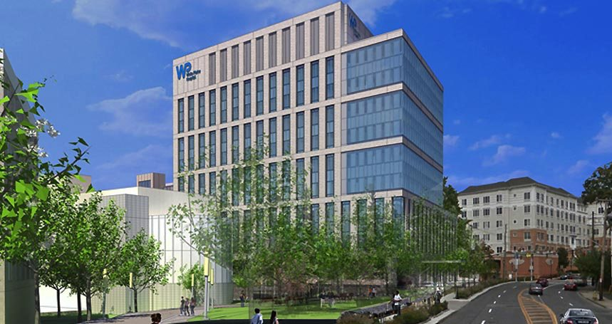
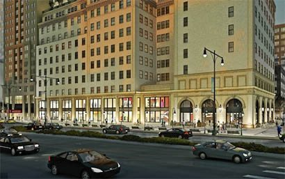
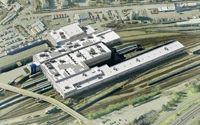

White Plains Hospital
Active healthcare construction in White Plains, New York.
Project directory
Search S&L’s published current and completed project experience across institutional, healthcare, government, high-rise, transportation, and infrastructure construction.
Searchable experience
Use a market filter or search by project, city, client type, or facility. Project scope details are limited to publicly supported information.
No projects match that search. Try a broader term or a different filter.
Selected visuals
Approved imagery helps project partners understand the environments and systems S&L is equipped to handle.

Active healthcare construction in White Plains, New York.

Urban commercial work in Downtown Brooklyn.

Transportation facility work in Croton-on-Hudson.

Coordinated commercial piping and equipment connections.